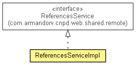

com.armandorv.cnpd.web.server.remote
Class ReferencesServiceImpl
java.lang.Object
 com.armandorv.cnpd.web.server.remote.ReferencesServiceImpl
com.armandorv.cnpd.web.server.remote.ReferencesServiceImpl
- All Implemented Interfaces:
- ReferencesService
@ApplicationScoped
public class ReferencesServiceImpl
- extends java.lang.Object
- implements ReferencesService

| Methods inherited from class java.lang.Object |
clone, equals, finalize, getClass, hashCode, notify, notifyAll, toString, wait, wait, wait |
ReferencesServiceImpl
public ReferencesServiceImpl()
getReferences
public java.util.List<ReferenceInfo> getReferences(long projectId)
- Specified by:
getReferences in interface ReferencesService
addNewReference
public long addNewReference(long projectId,
ReferenceInfo reference)
- Specified by:
addNewReference in interface ReferencesService
addReference
public boolean addReference(long projectId,
long referenceId)
- Specified by:
addReference in interface ReferencesService
removeReference
public boolean removeReference(long projectId,
long referenceId)
- Specified by:
removeReference in interface ReferencesService
searchReferences
public java.util.List<ReferenceInfo> searchReferences(long projectId,
java.lang.String keyWords)
- Specified by:
searchReferences in interface ReferencesService
Copyright © 2012 JBoss, a division of Red Hat. All Rights Reserved.